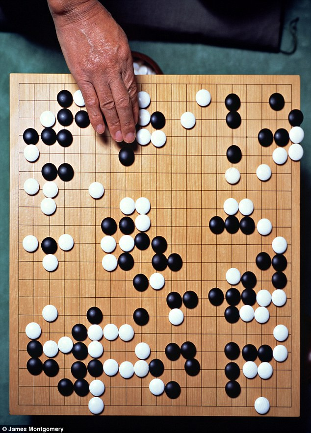
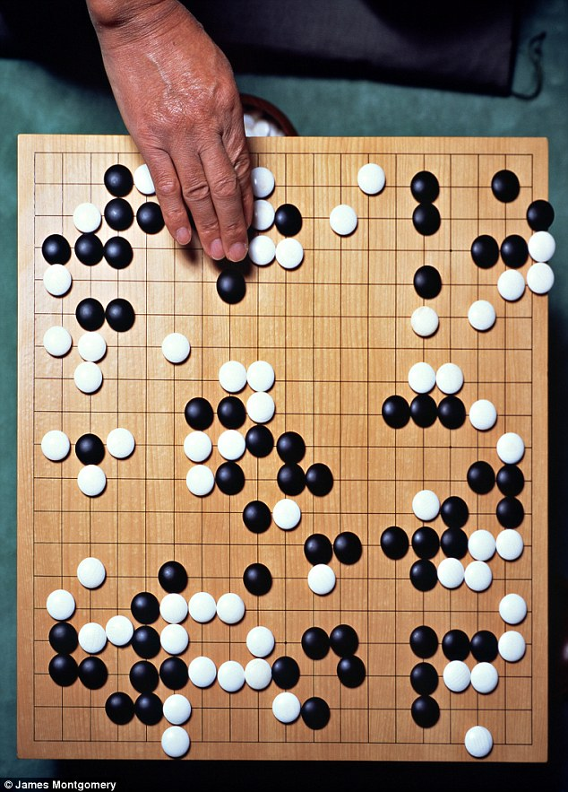
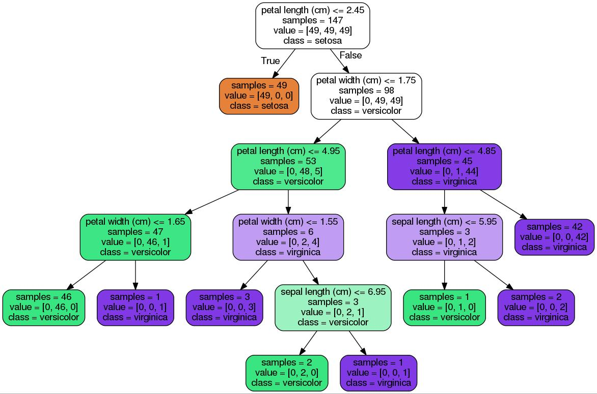
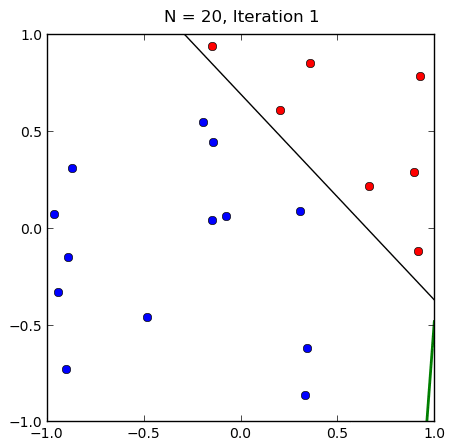

Machine Learning
Criado por Marcelo Andrade
O que é Machine Learning?
Para que serve Machine Learning?
 

Como classificar frutas?


Modelo clássico
def detectar_cor(imagem):
#código para detectar cor
def detectar_bordas(imagem):
#código para detectar bordas
def analise_formato(imagem):
#código de análise do formato
def detectar_textura(imagem):
#código de detecção da textura
def definir_fruta():
#código para predição da fruta
def definir_probabilidades():
#código para definir a probabilidade da resposta estar correta
Machine Learning

Banco de Dados
| Peso | Textura | Nome |
|---|---|---|
| 150g | Rugosa | Laranja |
| 170g | Rugosa | Laranja |
| 140g | Lisa | Maçã |
| 130g | Lisa | Maçã |
Modelo e predição
from sklearn import tree
#Etapas 1 e 2
dados = [[150,0],[170,0],[140,1],[130,1]]
nomes = [0,0,1,1]
#Etapa 3
clf = tree.DecisionTreeClassifier()
clf = clf.fit(dados,nomes)
#Etapa 4
prediction = clf.predict([[160,0]])
print(prediction)
Classificar espécies de Iris


Dataset Íris
Objetivos
Modelo e predição
#!/usr/bin/env python
# -*- coding: utf-8 -*-
import numpy as np
from sklearn.datasets import load_iris
from sklearn import tree
iris = load_iris()
#IDs dos testes
test_ids = [0,50,100]
#Dados de treinamento
train_target = np.delete(iris.target, test_ids)
train_data = np.delete(iris.data, test_ids, axis=0)
#Dados de teste
teste_target = iris.target[test_ids]
teste_data = iris.data[test_ids]
#Treinar classificador
clf = tree.DecisionTreeClassifier()
clf = clf.fit(train_data,train_target)
#Predicao
prediction = clf.predict(teste_data)
print(teste_target)
print(prediction)
#Visualizar arvore
from sklearn.externals.six import StringIO
import pydotplus
dot_data = StringIO()
tree.export_graphviz(clf,
out_file = dot_data,
feature_names = iris.feature_names,
class_names = iris.feature_names,
filled = True, rounded= True,
impurity = False)
graph = pydotplus.graph_from_dot_data(dot_data.getvalue())
graph.write_pdf("iris.pdf")
Árvore de decisões
O que é um classificador?
f(x) = y
X → características
Y → rótulo
def classificar(caracteristicas):
#logica de classificacao
return rotulo
Usando uma reta como modelo
Y =
a
X +
b

Tensorflow Playground
Verificar precisão dos testes
#!/usr/bin/env python
# -*- coding: utf-8 -*-
#Importar database
from sklearn.datasets import load_iris
iris = load_iris()
#Criar dados de treino e dados de teste
from sklearn.cross_validation import train_test_split
train_data, teste_data, train_target, teste_target = \
train_test_split(iris.data, iris.target, test_size = 0.5)
#Importar classificador
from sklearn import tree
clf = tree.DecisionTreeClassifier()
#Treinar classificador
clf.fit(train_data,train_target)
#Predicao teste
predictions = clf.predict(teste_data)
#Verificar precisão da predicao
from sklearn.metrics import accuracy_score
accuracy = accuracy_score(teste_target, predictions)
print(accuracy)
Criando seu primeiro classificador
kNN Fajuto
#!/usr/bin/env python
# -*- coding: utf-8 -*-
from scipy.spatial import distance
#Classe da simplificação do kNN
class primeiroClassificador():
#Método para importar database para o classificador
def fit(self,train_data,train_target):
self.train_data = train_data
self.train_target = train_target
#Método para prever resultado de testes
def predict(self,teste_data):
predictions = []
for row in teste_data:
prediction = self.closest(row)
predictions.append(prediction)
return predictions
#Método para achar o dado mais próximo de um teste
def closest(self,row):
best_dist = distance.euclidean(row, self.train_data[0])
best_index = 0
for i in range(1,len(self.train_data)):
dist = distance.euclidean(row,self.train_data[i])
if dist < best_dist:
best_dist = dist
best_index = i
return self.train_target[best_index]
#Importar database
from sklearn.datasets import load_iris
iris = load_iris()
#Criar dados de treino e dados de teste
from sklearn.cross_validation import train_test_split
train_data, teste_data, train_target, teste_target = train_test_split(iris.data, iris.target, test_size = 0.5)
clf = primeiroClassificador()
#Treinar classificador
clf.fit(train_data,train_target)
#Predicao teste
predictions = clf.predict(teste_data)
#Verificar precisão da predicao
from sklearn.metrics import accuracy_score
accuracy = accuracy_score(teste_target, predictions)
print(accuracy)
Pros e Cons
Aonde podemos chegar com Machine Learning?
Ferramentas para aprender Machine Learning
Obrigado! :)
Apresentação feita com base na série "Machine Learning Recipes" da Google